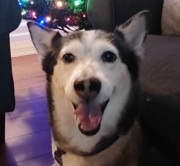
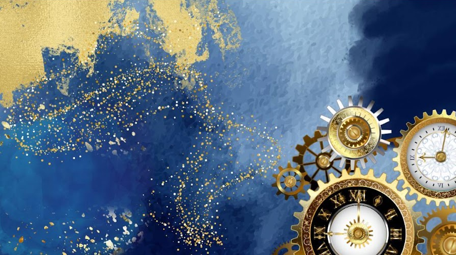
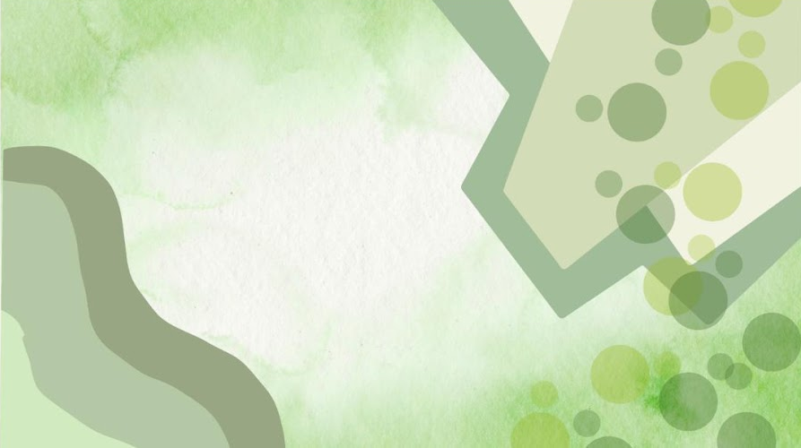

Welcome
A portfolio of my academic, technical, and personal growth.

A brief introduction
My name is David Alberto Alanís Alejandro. I was born in Mexico on February 2, 2010, and over time I have developed a strong interest in engineering, design, and problem-solving. Through my academic and extracurricular experiences, I have grown increasingly committed to pursuing a future in electrical engineering.
I moved to the United States on March 15, 2025, and since then I have focused on building a strong foundation through coursework, robotics, volunteering, and career-focused learning. These experiences have helped me grow both technically and personally as I work toward my long-term goals.

education, growth, and achievement
Beyond my core coursework, I actively seek opportunities to expand my knowledge and contribute meaningfully to my community. The Academics section highlights my formal education, academic progress, and the certifications I have earned to strengthen practical skills. It also reflects my involvement in school and community activities, demonstrating how I apply what I learn in real-world settings.
creative problem-solving and hands-on learning
I value the process of turning ideas into tangible results, whether through coding, digital design, or hands-on fabrication. The Projects section highlights the work that reflects my curiosity, creativity, and commitment to learning by doing. Each project demonstrates the tools, techniques, and problem-solving skills I have developed over time.

reading, reflection, and continued learning
Continuous learning extends beyond the classroom, and reading remains one of the most effective ways I explore new ideas and perspectives. My Media Tracking page functions as a personal digital library, documenting the books I am currently reading, the titles that have shaped my thinking, and the reviews that reflect my evolving interests.
A quick snapshot of the tools I use, the languages I speak, and the subjects I love exploring.
Building clean, responsive layouts and portfolio structures using HTML5 and CSS3 basics.
Working with physical tools and raw materials to design, build, and document DIY hobby projects.
Tracking coursework, analyzing transcripts, and pushing for milestones across core subjects.
Exploring diverse perspectives across non-fiction, fiction, technology trends, and classic literature.
Pursuing independent badges, specialized tests, and skills verification beyond school walls.
Participating in campus activities, event days, and student clubs to collaborate with peers.